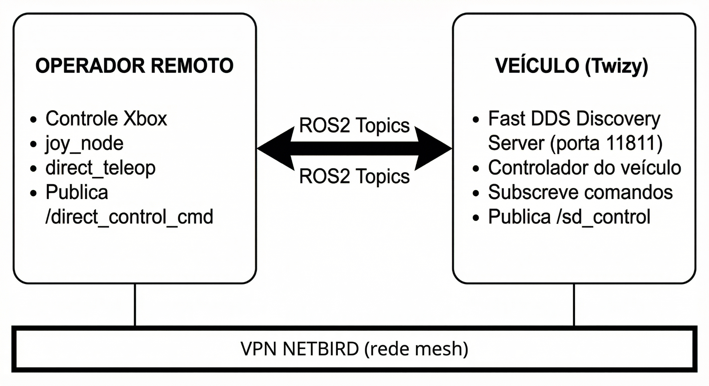

Teleoperação Remota¶
O Twizy suporta teleoperação remota via controle Xbox conectado a um laptop do operador em qualquer lugar com acesso à internet. A comunicação ocorre pela VPN NetBird e um FastDDS Discovery Server no veículo.
Visão Geral do Sistema¶

OPERADOR REMOTO VEÍCULO (Twizy)
─────────────────────────────────────────────────────────
Controle Xbox FastDDS Discovery Server
│ │ (porta 11811)
joy_node Nós de controle do veículo
│ │
direct_teleop ──── /direct_control_cmd ──► SD-VehicleInterface
◄── /sd_control ──────────────┘
└─────────── VPN NETBIRD (mesh) ───────┘
Fluxo de comandos:
- Operador envia setpoints de torque e direção via
/direct_control_cmd - PC do veículo assina, aplica os comandos ao Twizy via CAN e publica o estado atual em
/sd_control - O Discovery Server no veículo converte o tráfego ROS2 multicast em unicast, permitindo comunicação entre VPNs
Requisitos¶
| Componente | Versão | Função |
|---|---|---|
| SO | Ubuntu 22.04 LTS | Base para ROS2 Humble |
| ROS2 Middleware | rmw_fastrtps_cpp |
Necessário para o Discovery Server |
| VPN | NetBird (recente) | Comunicação mesh P2P |
| Containerização | Docker 24.x+ | Isolamento de ambiente |
Hardware: - Operador: laptop com controle Xbox USB ou Bluetooth - Veículo: PC de bordo conectado ao barramento CAN do Twizy - Ambos precisam de acesso à internet para a VPN
Procedimento de Operação¶
No veículo¶
# 1. Verificar se o NetBird está conectado e anotar o IP
netbird status
# 2. Iniciar o Discovery Server
docker compose up -d discovery-server
# 3. Iniciar os nós de controle do veículo (assina /direct_control_cmd, publica /sd_control)
docker compose up -d carro
Na máquina do operador¶
# 1. Verificar conectividade NetBird
ping twizy
# 2. Configurar variáveis de ambiente
export ROS_DISCOVERY_SERVER=twizy:11811 # hostname NetBird do veículo
export ROS_SUPER_CLIENT=true
export ROS_DOMAIN_ID=0
export RMW_IMPLEMENTATION=rmw_fastrtps_cpp
# 3. Iniciar a stack de teleoperação
docker compose up -d
# 4. Verificar se os tópicos estão visíveis
ros2 topic list
# Deve mostrar /direct_control_cmd e /sd_control
Estrutura dos Pacotes ROS2¶
ws/
├── teleop_joy_xbox/ # Pacote de teleoperação
│ ├── config/
│ │ └── xbox_controller.yaml
│ ├── launch/
│ │ ├── xbox_teleop.launch.py # Modo 1: Twist (cmd_vel)
│ │ └── direct_teleop.launch.py # Modo 2: Direct Control
│ └── teleop_joy_xbox/
│ ├── xbox_teleop_node.py
│ └── direct_teleop.py
└── sd_msgs/ # Mensagens customizadas
└── msg/
├── DirectControl.msg
└── SDControl.msg
Modos de Controle¶
Modo 1 — Twist Padrão¶
- Tipo de mensagem:
geometry_msgs/Twist - Tópico:
/cmd_vel - Uso: robôs móveis genéricos
Modo 2 — Direct Control (recomendado para Twizy)¶
- Mensagens:
sd_msgs/DirectControl(comandos),sd_msgs/SDControl(feedback) - Tópicos:
/direct_control_cmd→/sd_control - Uso: controle direto de torque e direção do veículo
Interface de Controle Xbox¶
A stack de teleoperação usa um controle Xbox (USB ou Bluetooth) na máquina do operador para gerar comandos de condução enviados ao veículo pela VPN NetBird.
Mapeamento de Botões (modo Direct Control)¶
| Comando | Botão/Eixo | Descrição Técnica |
|---|---|---|
| Acelerar | RT (Gatilho Direito) | Define setpoint de torque positivo |
| Frear | LT (Gatilho Esquerdo) | Define setpoint de torque negativo |
| Direção | Analógico Esquerdo | Controla o ângulo das rodas dianteiras |
| Centralizar direção | Botão LB | Centraliza a direção imediatamente |
| Aumentar limite de velocidade | Botão Y | Aumenta o limite máximo de velocidade |
| Diminuir limite de velocidade | Botão B | Diminui o limite máximo de velocidade |
| Aumentar intensidade de frenagem | Botão X | Aumenta a força de frenagem |
| Diminuir intensidade de frenagem | Botão A | Diminui a força de frenagem |
Direção dependente de velocidade
O direct_teleop aplica uma tabela de lookup que limita automaticamente o ângulo de direção conforme a velocidade do veículo aumenta — curvas fechadas são bloqueadas em alta velocidade.
Mensagens ROS2 Customizadas¶
DirectControl.msg (operador → veículo)¶
float64 linear_velocity # velocidade linear (opcional)
float64 torque_setpoint # -100 (freio total) a +100 (aceleração total)
float64 steer_setpoint # -100 (direita) a +100 (esquerda)
SDControl.msg (veículo → operador, feedback)¶
std_msgs/Header header
float64 steer # ângulo de direção atual
float64 torque # torque atual
float64 current_velocity # velocidade medida do veículo
float64 target_velocity # setpoint de velocidade alvo
int32 p, d, i, ff # termos PID de velocidade
int32 steer_p, steer_i, steer_d # termos PID de direção
float64 steer_actual # ângulo de direção real do sensor
Acesso ao dispositivo joystick no Docker¶
O container de teleop precisa de acesso aos dispositivos de entrada do host:
volumes:
- /dev/input:/dev/input:rw # acesso aos drivers de entrada
- /run/udev:/run/udev:ro # identificação correta do joystick via udev
devices:
- /dev/input # permissão explícita para o controle Xbox
Verificar se o joystick está detectado¶
# No host (antes de iniciar o Docker)
ls /dev/input/js*
# Deve mostrar /dev/input/js0 (ou similar)
# Dentro do container
ros2 run joy joy_node --ros-args -r /joy:=joy_teleop_test
ros2 topic echo /joy_teleop_test
# Mova um analógico — os valores devem mudar na saída
Docker Compose (lado do operador)¶
services:
discovery-server:
build:
context: .
dockerfile: Dockerfile.server
container_name: fastdds_server
network_mode: "host"
command: -i 0
restart: unless-stopped
teleop-client:
build:
context: .
dockerfile: Dockerfile.client
container_name: ros2_teleop_joy
network_mode: "host"
depends_on:
- discovery-server
environment:
- ROS_DISCOVERY_SERVER=twizy:11811
- ROS_DOMAIN_ID=0
- ROS_SUPER_CLIENT=true
- RMW_IMPLEMENTATION=rmw_fastrtps_cpp
volumes:
- ./ws:/root/ros2_ws/src:rw
- /dev/input:/dev/input:rw
- /run/udev:/run/udev:ro
devices:
- /dev/input
command: ros2 run joy joy_node --ros-args -r /joy:=joy_teleop_test
network_mode: host é obrigatório
Sem network_mode: host, o Docker roteia o tráfego pela sua rede bridge em vez da interface NetBird (wt0). Os nós ROS2 nunca conseguiriam alcançar o Discovery Server no veículo.